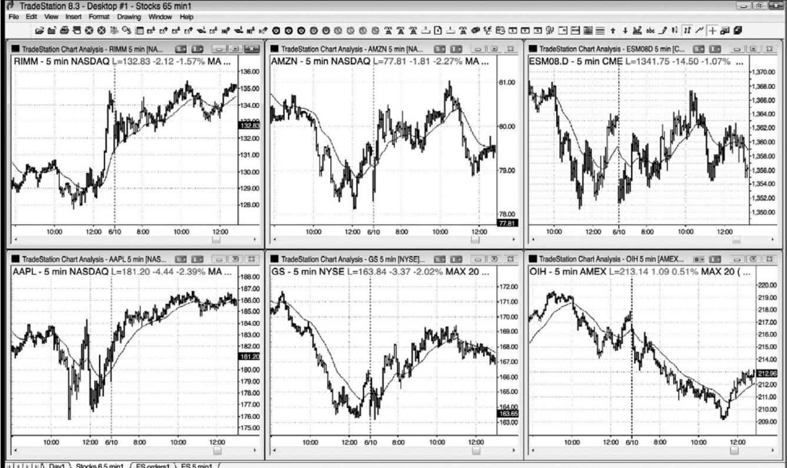
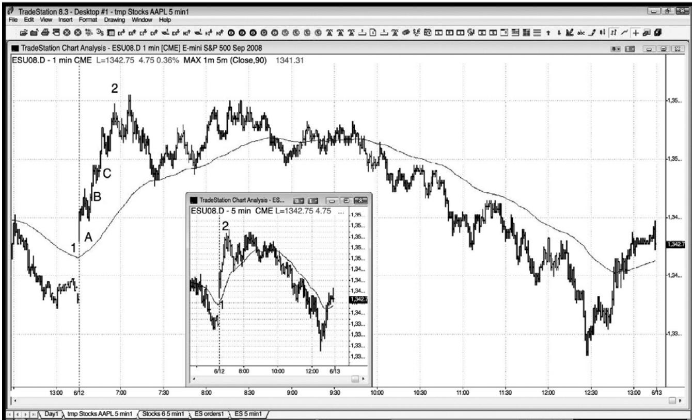
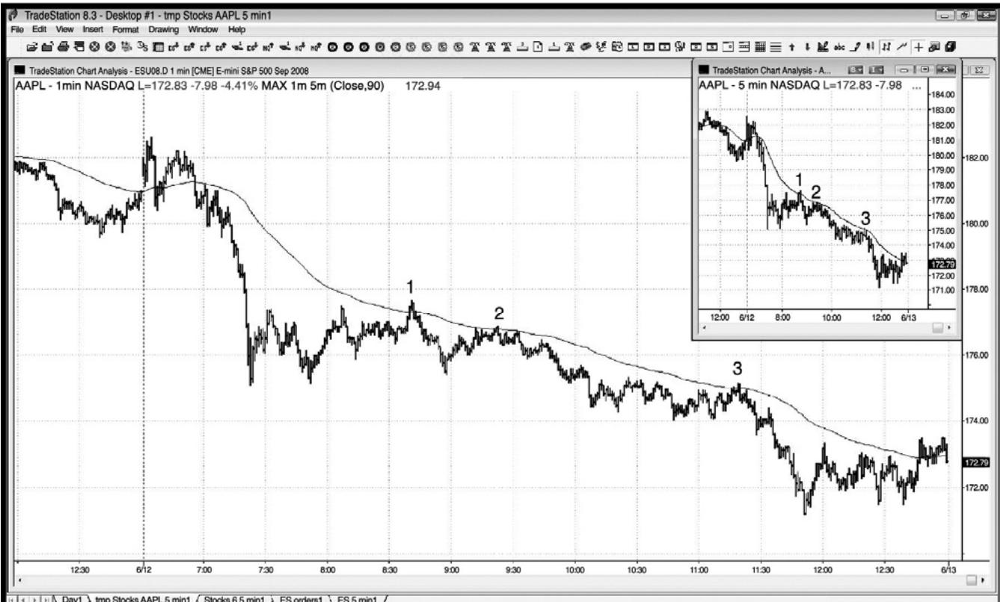
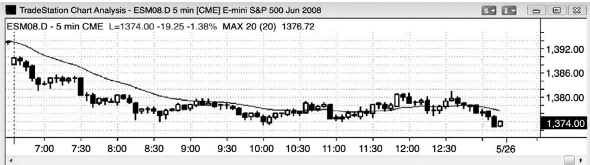
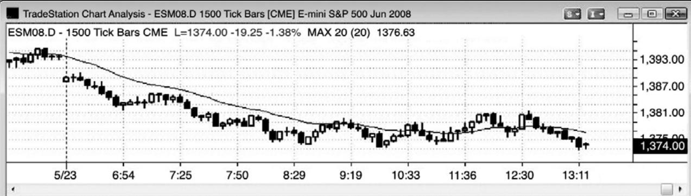
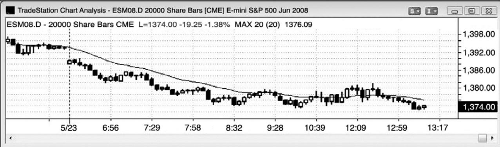
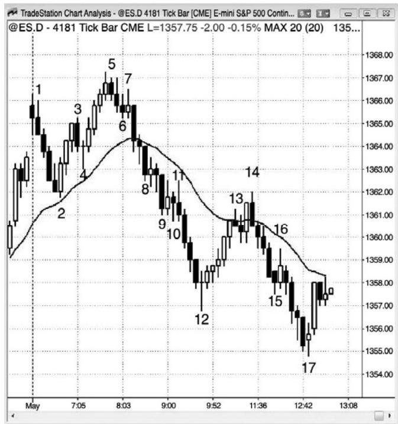
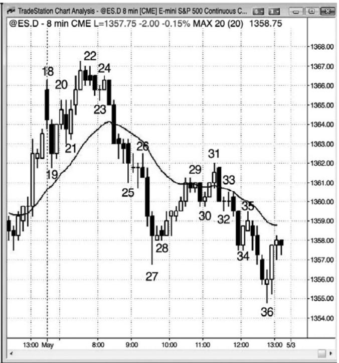
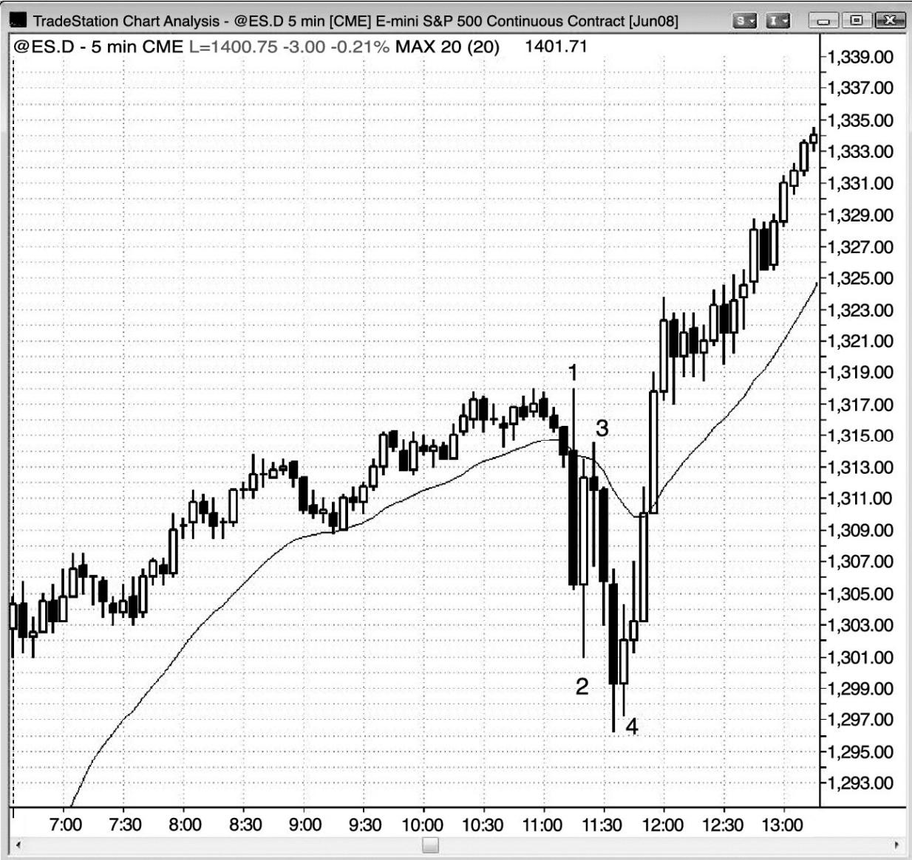
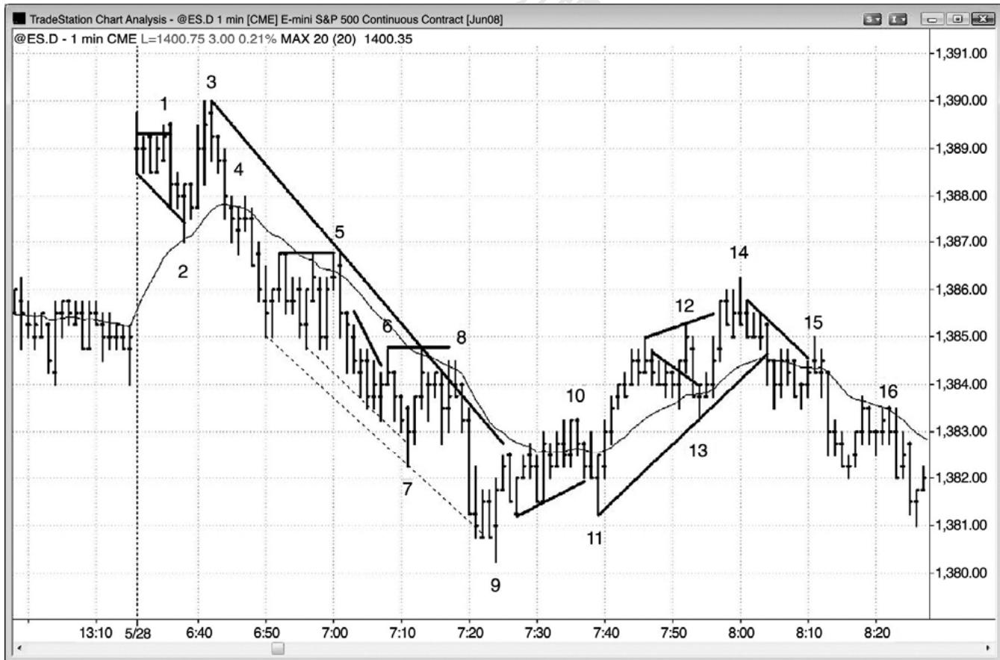

第13章 时间框架和图表类型¶
第 13 章 时间框架和图表类型
对于刮头皮者来说，在电子迷你中使用 5 分钟 K 线图是最简单的。不过，对于电子迷你或股票的日内波段交易，简单的 5 分钟棒线图就表现不俗。这是因为，在笔记本或单显示器上，你可以同时查看 6 张图表，每张都是不同的股票，每张图表可以包含一整天的棒线。如果你使用 K 线，它比棒线要宽，那么你的图表将只能显示半天的价格行为。提到这一点有一个重要原因，那就是提醒交易者这种方法在简单的棒线图上工作得很好，特别是当你只在努力把最佳入场波段化时。对于电子迷你中的刮头皮们来说，K 线图的优点是很容易快速看出是谁在拥有那些棒线，尤其是架构棒。另外，大量的高点和低点 2 变种在棒线图上不容易看出来。
价格行为交易技术适用于所有市场和所有时间框架，所以交易者们必须做出明显的基本决定，应该交易哪些市场，使用哪些时间框架。大部分交易者的目标是最大化长期获利性，也就是说每位交易者需要找到一种适合自己个性的方法。
如果 5 分钟电子迷你图表平均每天提供十几个不错的入场，3 分钟图表提供 20 个，1 分钟图表提供 30 个，而且 5 分钟图上的风险（保护性止损的大小）是 8 个跳动，3 分钟图上的风险是 6 个跳动，1 分钟图上的风险是 4 个跳动，那么为什么不交易更短的时间框架呢？更多交易，更低风险，更多利润— —不是吗？的是，前提是你能够足够快速地、正确地实时阅读图表，以便在正确的价格设定入场、止损和利润目标订单，一天 7 个小时一直这样做，年复一年。对于很多交易者来说，时间框架越小，他们错过的好交易就越多，他们的胜率就变得越低。他们只是不能足够快速地在 1 分钟和 3 分钟图上使用这种方法刮头皮，所得利润不如使用 5 分钟图，因此，他们应该把精力集中在 5 分钟图上，应该不断为增大头寸规模而努力。最佳交易常常出乎意料，而且架构很难让人相信。大部分交易者只是不能足够快速地处理那些信息。他们难免会挑挑拣拣，却常常错过最佳架构，而那些架构对于使他们免于破产是最重要的。最佳交易的形成和触发常常非常迅速，以至于他们很容易便错过，于是剩下的交易便是不太好的，包括所有亏损交易。
较高时间框架图表上运动的平均规模要大于较小时间框架图表上运动的平均规模。不过，几乎每个较高时间框架波段都是从 1 分钟和 3 分钟图上的反转开始的。很难知道哪个反转会引起波段运动，一天试图找出 30 笔或更多交易，希望出现大的波段运动，会令人精疲力竭。1分钟和3分钟图上的最佳交易，在5分钟力15分钟图上引起很棒的入场，对于大部分交易者来说，专注于 5 分钟图上的最佳交易，并且努力增加头寸规模，所获得的利润要多得多。
一旦他们能够成功交易，他们就能够赚到大量的钱，获得非常高的胜率，结果变得几乎不会紧张，而且更有能力保持长期优良的表现。
另外，随着头寸规模的加大，在某个点处，你的成交量将会对 1 分钟图上很多交易造成影响。举一个极端的例子，如果你有一张利润目标限价单是在高于市价两个跳动处卖出5,000张电子迷你合约，那么拥有挂单列表的交易者便会看到这种偏差，你就很难在一天的时间里完成 10 到 15 笔交易。另外，使用止损单入场将带来一两个跳动的滑移价差，那将使刮头皮的风险/回报比大打折扣。交易者甚至可以使用价格行为每笔交易 5,000 张合约，但并非使用大部分交易所需的入场和出场刮头皮技术。愿你有一天能够遇到重新思考交易方法的问题，那时你的成交量已经对你对的订单执行造成影响！
1 分钟图可能在两种情况下非常有用。如果 5 分钟图处于一轮逃逸型趋势中，你现在持平但是希望入场，那么你就可以观察 1 分钟图，寻找高点/低点 2 回撤，然后顺势入场。第二种情况是老手们在 5 分钟图上做趋势运动的股票中做波段交易时，1 分钟图非常有用。当股票做趋势运动时，它们对于均线往往敬而远之，可以利用均线处的高点/低点1或2 架构做顺势交易。在 5 分钟图上市场触及或刺穿均线之后的首个反转，交易者们可以利用 1 分钟图入场，从而使风险有所降低。如果你在 1 分钟图上画出一条 5 分钟 20 棒均线，你很快便能看到市场何时触及均线，然后便下单。实际上，在 1 分钟图上你需要画出一条 90 棒均线，作为 5分钟 20 棒均线的替代品。为什么是 90 棒而不是 100 棒呢？因为 1 分钟图上的均线在每条 1分钟棒收盘后都要重新计算，而不是在每 5 棒收盘后重新计算，因此，最新棒线的权重一般会使得 100 棒均线有点了太过平坦。另外，1 分钟图上的头 4 个收盘并不是 5 分钟均线的一部分。为了纠正这一点，使用 90 棒均线（我使用的是指数均线，但是任何一种均线都不错），它非常接近5分钟20棒均线。在实际应用中，你难得有时间观察1分钟股票图，因为你专注于电子迷你。不过，当一只股票做强趋势运动时，你可能有时会使用 1 分钟图快速入场。
P157
毫无疑问，不同时间框架上的趋势可能恰好相反。举例说明，如果市场已经强势上涨了几周，但是过去的两天内它已经处于一条趋势型空头通道内，在过去的 15 分钟，市场上涨，向着一条正在下降的 5 分钟均线回撤，那么，5 分钟图处于空头趋势内，1 分钟图处于多头趋势内，两天的下跌运动很可能在 60 分钟图上形成一个多头旗形。还有可能日线图看跌，月线图看涨，而且是在同一时间。试图协调所有这些信息会把人搞糊涂，等待所有时间框架处于同一方向是浪费时间，因为那种情况很少发生，而且即便都处于同一方向，也不保证交易获利。只选一个时间框架，根据你面前的价格行为进行交易。如果你能够正确读图，并且认真交易，那么即便不知道其他图表上正在发生什么，也能够做得很好。
很多交易者使用以成交量为基准而不是以时间为基准的图表。举例说明，我们可以这样来构造一张电子迷你图表，其中每一棒一旦达到 5,000 个或更多跳动便收盘，或者每达到25,000张合约便收盘。只要你对需要阅读图表和下单的速度感觉舒适，什么类型的图表并不重要。所有图表上的行为都是基于人类的行为，因此是相同的。与基于成交量的图表相比，趋势线一般在基于时间的图表上更加准确，但是很多交易者不担心精确的趋势线，而只是使用近似的趋势线。
我有一群朋友，他们使用以斐波那契数列为基础的跳动图，很有一些朋友使用以不常见的时间周期绘制的图表，比如8分钟或 13分钟。每一种图表都会在某个时间有效，但是，如果只选择一种图表，那么交易起来更容易一些。无论是跳动图、成交量图、还是时间图，都没有关系，无论每一棒包含多少个跳动、多少股、还是多少分钟，也没有关系。一天当中，所有类型的图表上都会产生很棒的价格行为信号。真正重要的是交易者实时读图和正确管理交易的能力。对于第一棒，你可以以完全随机的跳动数、股数或时间数进行试验，你将发现，那些图表都看起来很棒，会提供大量合理的信号。我个人喜欢 5 分钟图，因为趋势线和趋势通道线常常很精确，每天都有足够的架构，而且我能够看到棒线何时将会收盘，那允许我预期交易架构的形成。对于跳动图或成交量图，持续几秒的混乱交易便会导致棒线先于预期很长时间收盘，我发现自己最终错过太多很棒的信号，而那些信号在收盘后打印出的图表上很容易看出来。另外，那些图表上的趋势线不太精确。使用以跳动或成交量为基准的图表的交易者们还有一种倾向，那就是使用更小的时间框架。他们这样做的目的是将止损规模最小化，希望风险的降低会带来利润的增加。他们难免会忽略随之而来更低的胜率，结果赔钱。
图13.1 使用棒线图做波段交易

在如图 13.1 所示简单的棒线图中，就可以使用价格行为做波段交易。当出现一轮趋势时，准备在回撤顺势入场，比如多头趋势中的高点 2 或空头趋势中的低点 2。另外，在趋势线被强势突破之后，准备在测试时逆势入场，比如可能的新多头趋势中的更高低点或更低低点，前提是反转棒很强。
P158
图 13.2 1 分钟图上的回撤

如果 5 分钟图没有出现回撤，而你正费尽心思地想着如何做多，那么就考虑观察 1 分钟图（见图 13.2）。5 分钟图电子迷你插图显示出它在没有回撤的情况下从开盘上涨了 11.75 点。如果交易者错过了开始多头趋势，那么他们会错过整个波段，因为没有回撤。不过，如果他们选择观察 1 分钟图，那么就有三个高点 1 架构（棒 A、B 和 C），他们可以在那里入场。将要买进的激进型多头，在 1 分钟图上前一棒低点处设定限价单，预期每一个反转尝试都迅速失败。一旦入场做多，他们就会在 5 分钟图上管理他们的交易，不再观察 1 分钟图，不过，他们突然发现那些是可以做空的反转。观察 1 分钟图的原因只有一个——寻找高点 1 和 2 做多入场，因为 5 分钟图上没有回撤。在 1 分钟图上做逆势交易会使你赔钱。实际上，那三个做多架构恰好位于 1 分钟空头的回补价位，当他们回补时，他们会成为额外的买家，帮助驱动市场上涨。
图 13.3 1 分钟图上的均线回撤

如图 13.3 所示，这张 AAPL 的 1 分钟图在一个强空头趋势日内在 90 棒指数均线处提供了三个非常好的做空架构（等价于 5 分钟 20 棒指数均线），风险很低（棒线高度）。插图所示为强劲的 5 分钟尖峰和通道空头趋势。大部分交易者应该只使用一种图表，不必费心观察 1 分钟图。很容易被 1 分钟图上的小幅运动所吸引，错过 5 分钟图上的大画面，结果使利润大打折扣。对于初学者来说，很容易过度交易、离场太早、不让利润奔跑、结果赔钱，尽管他们在下跌过程中正确的入场做空。
P159
图 13.4 在第一个小时左右，成交量图和跳动图拥有更多棒线



图13.4所示3张图表都是同一电子迷你日内时段。最上边是5分钟图，中间是每棒1,500个跳动（每棒 1,500 笔交易）的跳动图，下边是每棒 20,000 张合约的成交量图（从一棒开始，一达到或超过 20,000 张合约，那一棒便收盘）。它们表现出相似的价格行为，而且都可交易，但是，由于最高成交量通常在第一个小时左右产生，所以跳动图和成交量图被拉伸了，在一天之初的每个小时和当天最后一个小时，拥有更多棒线。
图 13.5 价格行为方法适用于任意时间框架和任意类型的图表


P160
图 13.5 中，左侧图表是每棒斐波那契 4,181 个跳动，右侧图表是 8 分钟棒线图。两张图中都有很多可靠的架构。每种类型的图表在某些时间都会给出不错的信号，但是，如果只选择一种图表，那么交易起来会容易一些。无论是跳动图、成交量图、还是时间图，都没有关系，无论每一棒包含多少个跳动、多少股、还是多少分钟，也没有关系。你可以选择完全随机的数字。真正重要的是交易者实时读图和正确管理交易的能力。所有图表上发生的事情只是我们基因的一种表达，无论你使用那种表达的何处描绘都没有关系。所有图表都显示着相同的行为。
图 13.6 报告期间的大型棒线和反转

P161
报告可能引起非常情绪化的运动，伴随着大型棒线、外包棒和若干次反转。在报告出来后的几秒钟到几分钟内，机构计算机化的交易在分析和下单速度方面给它们带来明显的优势。当你的对手拥有巨大的优势时，不要参与竞争。等待他们的优势消失，当速度不再重要时交易，那通常是开盘 1 到 3 小时之后。尽管快速的运动和大型棒线产生的情绪对所有交易者都有影响，但是价格行为架构仍然非常可靠。一般而言，总要在设好盈亏平衡止损的情况下把部分头寸波段化，因为有时波段延续的时间可能比你想像得要长得多。
如图 13.6 所示，联邦公开市场政策委员会（FOMC）的报告在太平洋标准时间上午 11:15发布（有时会晚几分钟），导致情绪化的交易，在接下来的 30 分钟里形成大型棒线、外包棒和若干次反转。不过，记住价格行为规则的交易者做得很好。棒 2 是一条大型多头反转棒，但是，每当一棒与前一棒存在大量重叠时，可能正在形成交易区间，所以决不应该在区间顶部买进。相反地，应该寻找被套的交易者、小型棒线和二次入场。
棒 3 是一个很棒的空头刮头皮机会，因为有被套的过于急切的多头错误地把大型反转棒当作合理的做多架构。
棒 4 是第二次尝试对开盘时形成的当日低点的向下突破向上反转。二次入场总是值得选择，在一个情绪化的交易日中，一条多头趋势内包棒很可能是不错的选择。由于这可能至少引起两条上涨腿，所以你需要把部分头寸波段化。初始止损位于信号棒中点附近，一旦那一棒收盘，就要调整至入场棒棒 4 下方 1 个跳动处。然后，可以将止损跟踪调整至前一棒低点下方，最终移至盈亏平衡点。
情绪化的交易日所引起的趋势常常比你预期的要长很多，捕捉到这样一波趋势，比你做很多很多笔刮头皮交易所赚的还要多。这里，多头趋势持续运动了几乎 30 点，每张合约约$1,500。

P162
如图13.7所示，对于能够快速阅读价格行为并下单的交易者来说，电子迷你在1分钟图上的头两个小时提供了很多可获利的刮头皮机会。实际操作时非常困难，而且大部分交易者
会发现自己太紧张，还难正确读图并下单，结果亏钱。
棒 1 是对一个 iii 形态的向上假突破，是上涨缺口日的一个更低高点。
棒 2 在均线处形成一个高点 2，一个楔形多头旗形，以及一个趋势通道线反转。
棒 3 是上涨缺口日向上突破至一个新的高点失败后的一个做空架构，市场可能测试缺口（市场通常会试着测试缺口，所以交易者们应该寻找机会在那个方向交易）。
棒 5 是均线处的一个低点 3。低点 3 是一种楔形或三角形，这里它还是一个三重顶空头旗形。
棒 6 是一个失败的微型趋势线突破，是棒 5 空头旗形突破后的突破回撤。
棒 7 反转了两条空头趋势通道线，但不是一个可获利的做多架构，于是使得交易者们认为空头依然很强。因为通道陡峭，所以这是一个楔形反转，不是一个楔形多头旗形，所以更好的做法是准备在趋势线突破或市场向上超越均线后在更高低点买进。
棒 8 是一个失败的趋势线突破，一个双重顶回撤，一个低点 2 做空架构，以及一个从棒7 开始的五跳动失败做多架构。由于有如此多的因素偏向于空头，所以毫不奇怪市场会快速下跌。
棒 9 是空头趋势通道线过冲后二次尝试向上反转，也是空头通道终点处一波卖出高潮后的向上反转。当空头通道向下突破，然后向上反转时，通常至少会引出一波两条腿的反弹，向上穿过通道顶部。
棒10是一个糟糕的做空架构，因为交易者们正预期形成一个更高低点和第二条上涨腿。结果它在棒 11 成为一个五跳动失败，那是一种反转形态。相反地，交易者们应该在棒 10 下方买进，预期形成第二条上涨腿。
棒 11 是一个双重底多头旗形和一个更高低点，它应该引出第二条上涨腿。
棒 12 是一个失败的多头旗形突破，但是从棒 11 开始的上涨尖峰非常强劲，所以交易者们仅应在更低高点准备做空。
棒13是均线处的一个高点2，是对市场向上突破棒10的测试。
棒 14 是一个扩张三角形顶中的一个二次入场做空架构，也是这一波空头反弹中的第三次上推，所以是一个楔形做空架构。它也是一个趋势通道线反转，并与棒 5 形成一个双重顶空头旗形。
棒 15 是均线处的一个低点 2，一个失败的趋势线（从棒 14 高点开始）突破，也是棒 11到棒13趋势线突破后的一个更低高点。
棒 16 是又一个均线处的低点 2，也是一个双重顶空头旗形。